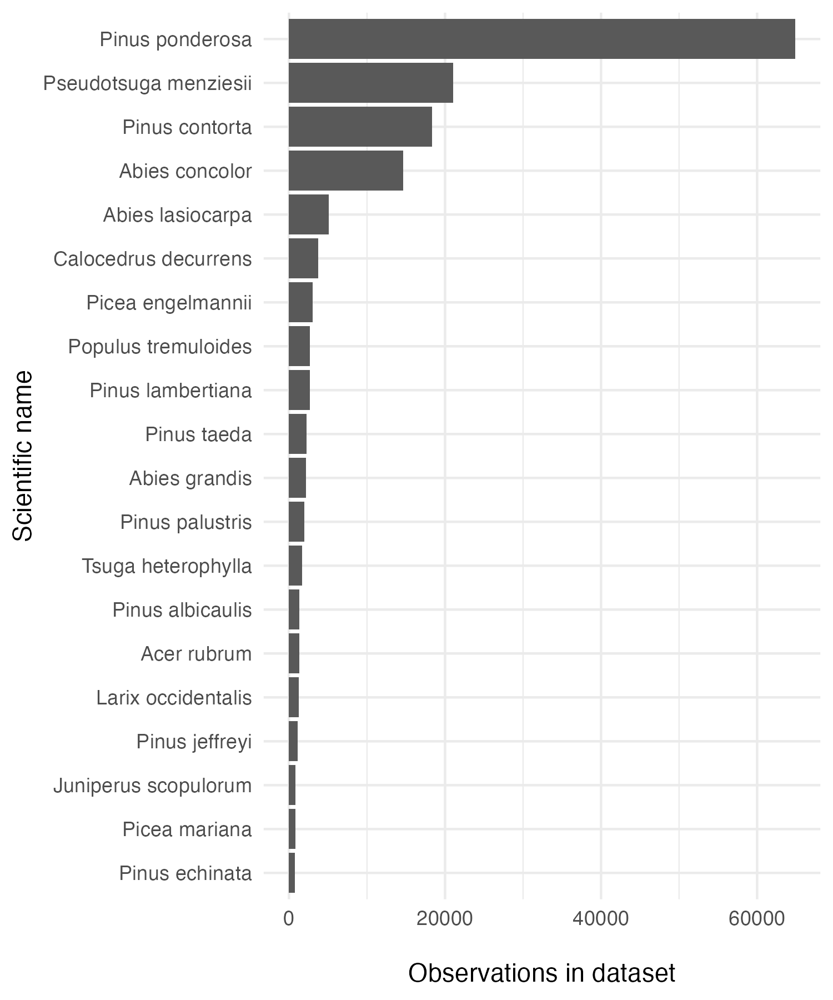
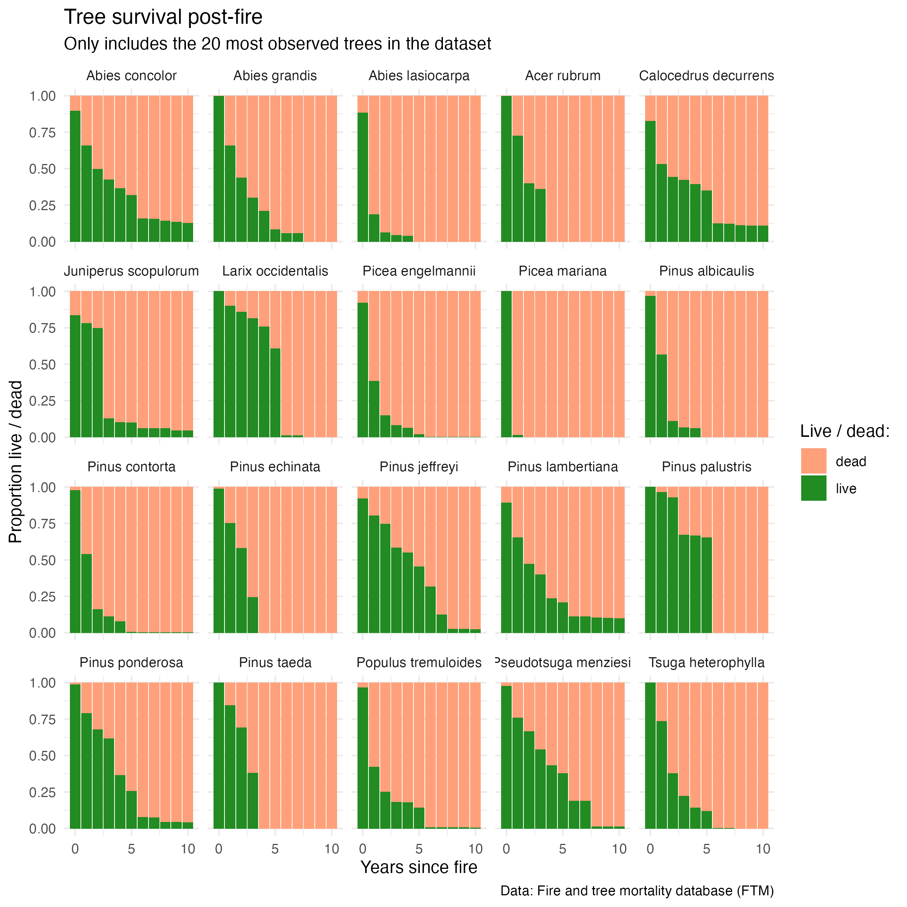
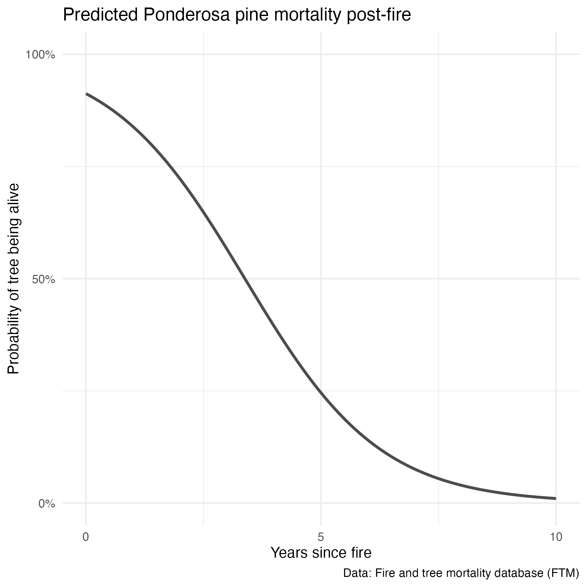
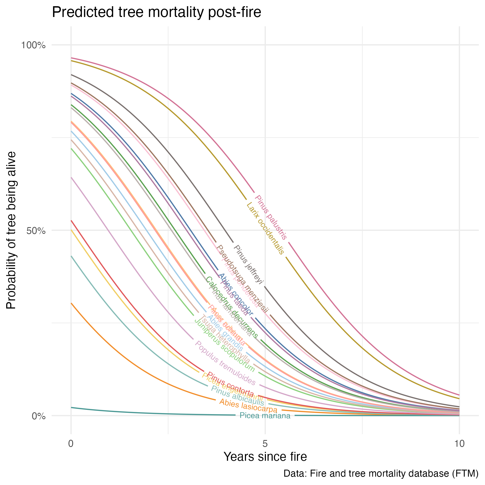

Basically, there’s this awesome dataset on tree survival following fires, the Fire and Tree Mortality Database, and I want to go exploring & compare fire survival across species. Some fun with tidymodels, data visualization, binary logistic regression, and my first shot at using the fantastic geomtextpath package!
Cansler, C. Alina; Hood, Sharon M.; Varner, J. Morgan; van Mantgem, Phillip J.; Agne, Michelle C.; Andrus, Robert A.; Ayres, Matthew P.; Ayres, Bruce D.; Bakker, Jonathan D.; Battaglia, Michael A.; Bentz, Barbara J.; Breece, Carolyn R.; Brown, James K.; Cluck, Daniel R.; Coleman, Tom W.; Corace, R. Gregory; Covington, W. Wallace; Cram, Douglas S.; Cronan, James B.; Crouse, Joseph E.; Das, Adrian J.; Davis, Ryan S.; Dickinson, Darci M.; Fitzgerald, Stephen A.; Fulé, Peter Z.; Ganio, Lisa M.; Grayson, Lindsay M.; Halpern, Charles B.; Hanula, Jim L.; Harvey, Brian J.; Hiers, J. Kevin; Huffman, David W.; Keifer, MaryBeth; Keyser, Tara L.; Kobziar, Leda N.; Kolb, Thomas E.; Kolden, Crystal A.; Kopper, Karen E.; Kreitler, Jason R.; Kreye, Jesse K.; Latimer, Andrew M.; Lerch, Andrew P.; Lombardero, Maria J.; McDaniel, Virginia L.; McHugh, Charles W.; McMillin, Joel D.; Moghaddas, Jason J.; O’Brien, Joseph J.; Perrakis, Daniel D.B.; Peterson, David W.; Prichard, Susan J.; Progar, Robert A.; Raffa, Kenneth F.; Reinhardt, Elizabeth D.; Restaino, Joseph C.; Roccaforte, John P.; Rogers, Brendan M.; Ryan, Kevin C.; Safford, Hugh D.; Santoro, Alyson E.; Shearman, Timothy M.; Shumate, Alice M.; Sieg, Carolyn H.; Smith, Sheri L.; Smith, Rebecca J.; Stephenson, Nathan L.; Steuver, Mary; Stevens, Jens T.; Stoddard, Michael T.; Thies, Walter G.; Vaillant, Nicole M.; Weiss, Shelby A.; Westlind, Douglas J.; Woolley, Travis J.; Wright, Michah. 2020. Fire and tree mortality database (FTM). Fort Collins, CO: Forest Service Research Data Archive. Updated 24 July 2020. https://doi.org/10.2737/RDS-2020-0001
Cansler, C. Alina; Hood, Sharon M.; Varner, J. Morgan; van Mantgem, Phillip J.; Agne, Michelle C.; Andrus, Robert A.; Ayres, Matthew P.; Ayres, Bruce D.; Bakker, Jonathan D.; Battaglia, Michael A.; Bentz, Barbara J.; Breece, Carolyn R.; Brown, James K.; Cluck, Daniel R.; Coleman, Tom W.; Corace, R. Gregory; Covington, W. Wallace; Cram, Douglas S.; Cronan, James B.; Crouse, Joseph E.; Das, Adrian J.; Davis, Ryan S.; Dickinson, Darci M.; Fitzgerald, Stephen A.; Fulé, Peter Z.; Ganio, Lisa M.; Grayson, Lindsay M.; Halpern, Charles B.; Hanula, Jim L.; Harvey, Brian J.; Hiers, J. Kevin; Huffman, David W.; Keifer, MaryBeth; Keyser, Tara L.; Kobziar, Leda N.; Kolb, Thomas E.; Kolden, Crystal A.; Kopper, Karen E.; Kreitler, Jason R.; Kreye, Jesse K.; Latimer, Andrew M.; Lerch, Andrew P.; Lombardero, Maria J.; McDaniel, Virginia L.; McHugh, Charles W.; McMillin, Joel D.; Moghaddas, Jason J.; O’Brien, Joseph J.; Perrakis, Daniel D.B.; Peterson, David W.; Prichard, Susan J.; Progar, Robert A.; Raffa, Kenneth F.; Reinhardt, Elizabeth D.; Restaino, Joseph C.; Roccaforte, John P.; Rogers, Brendan M.; Ryan, Kevin C.; Safford, Hugh D.; Santoro, Alyson E.; Shearman, Timothy M.; Shumate, Alice M.; Sieg, Carolyn H.; Smith, Sheri L.; Smith, Rebecca J.; Stephenson, Nathan L.; Steuver, Mary; Stevens, Jens T.; Stoddard, Michael T.; Thies, Walter G.; Vaillant, Nicole M.; Weiss, Shelby A.; Westlind, Douglas J.; Woolley, Travis J.; Wright, Michah C. 2020. The Fire and Tree Mortality Database, for empirical modeling of individual tree mortality after fire. Scientific Data 7: 194. https://doi.org/10.1038/s41597-020-0522-7
library(tidyverse)
library(here)
library(naniar)
library(tidymodels)
library(geomtextpath)
library(paletteer)trees <- read_csv(here("content", "post", "2022-03-10-tree-mortality-fires", "data", "Data", "FTM_trees.csv")) # Tree outcomes and recordsImportant information: See attributes in _metadata_RDS-2020-0001.html for variable definitions.
Counts of tree species in the dataset:
# Find the top 20 most counted tree species
trees <- trees %>%
mutate(sci_name = paste(Genus, Species_name)) %>%
filter(sci_name != "Pinus jeffreyi or ponderosa")
tree_count_top_20 <- trees %>%
count(sci_name) %>%
mutate(sci_name = fct_reorder(sci_name, n)) %>%
slice_max(n, n = 20)
tree_20_gg <- ggplot(data = tree_count_top_20, aes(x = sci_name, y = n)) +
geom_col() +
coord_flip() +
theme_minimal() +
labs(y = "\nObservations in dataset",
x = "Scientific name")
Counts of live (0) and dead (1) for the top 20 most recorded trees in the dataset:
# Make a long form of the trees dataset (top 20 most observed tree species)
trees_long <- trees %>%
pivot_longer(cols = yr0status:yr10status, names_to = "yr_outcome", values_to = "live_dead") %>%
mutate(yr_since_fire = as.numeric(parse_number(yr_outcome)),
live_dead_chr = case_when(
live_dead == 0 ~ "live",
live_dead == 1 ~ "dead"
)) %>%
filter(sci_name %in% tree_count_top_20$sci_name)
trees_live_dead <- trees_long %>%
count(sci_name, yr_since_fire, live_dead_chr) %>%
drop_na()
tree_survival_gg <- ggplot(data = trees_live_dead, aes(x = yr_since_fire, y = n)) +
geom_col(aes(fill = live_dead_chr), position = "fill") +
scale_fill_manual(values = c("lightsalmon", "forestgreen"),
name = "Live / dead:") +
scale_x_continuous(breaks = c(0, 5, 10), labels = c("0", "5", "10")) +
theme_minimal() +
labs(x = "Years since fire",
y = "Proportion live / dead",
title = "Tree survival post-fire",
subtitle = "Only includes the 20 most observed trees in the dataset",
caption = "Data: Fire and tree mortality database (FTM)") +
facet_wrap(~sci_name)
We can already see some interesting differences in survival across species. For example, Picea mariana and Abies lasiocarpa experience quick mortality within the first year; others like Pinus jeffreyi and Abies concolor appear more resilient. However, near-complete mortality is observed across all species within 10 years.
Since it is the most observed species in the dataset and because it happens to be one of my favorite trees, I’ll dive a bit deeper into factors that may influence Pinus ponderosa mortality post-fire.
ponderosa <- trees_long %>%
filter(sci_name == "Pinus ponderosa")First, let’s take a look at mortality over time (years since fire):
survival_gg <- ggplot(data = ponderosa, aes(x = yr_since_fire, y = live_dead)) +
geom_jitter(alpha = 0.008) +
labs(x = "Years since fire",
y = "Tree status (live / dead)",
title = "Ponderosa pine mortality post-fire",
caption = "Data: Fire and tree mortality database (FTM)") +
scale_y_continuous(breaks = c(0, 1), labels = c("Live", "Dead")) +
scale_x_continuous(breaks = c(0, 5, 10), labels = c("0", "5", "10")) +
theme_minimal()tidymodelsCreate the training & testing sets
ponderosa <- ponderosa %>%
drop_na(yr_since_fire, live_dead) %>%
mutate(live_dead = as.factor(live_dead))
# Make the training & testing dataset:
ponderosa_split <- ponderosa %>%
initial_split(prop = 4/5)
# Confirm the splits (Analysis/Assess/Total):
ponderosa_split## <Analysis/Assess/Total>
## <293297/73325/366622># Extract the training and testing sets:
ponderosa_train <- training(ponderosa_split)
ponderosa_test <- testing(ponderosa_split)
# Check them out a bit:
ponderosa_train %>%
count(yr_since_fire, live_dead)## # A tibble: 22 × 3
## yr_since_fire live_dead n
## <dbl> <fct> <int>
## 1 0 0 39815
## 2 0 1 535
## 3 1 0 39058
## 4 1 1 10455
## 5 2 0 26918
## 6 2 1 12846
## 7 3 0 23654
## 8 3 1 14864
## 9 4 0 8630
## 10 4 1 15046
## # … with 12 more rowsponderosa_test %>%
count(yr_since_fire, live_dead)## # A tibble: 22 × 3
## yr_since_fire live_dead n
## <dbl> <fct> <int>
## 1 0 0 9854
## 2 0 1 154
## 3 1 0 9821
## 4 1 1 2514
## 5 2 0 6790
## 6 2 1 3248
## 7 3 0 5899
## 8 3 1 3637
## 9 4 0 2173
## 10 4 1 3707
## # … with 12 more rows# Just using the single predictor here:
ponderosa_recipe <- recipe(live_dead ~ yr_since_fire, data = ponderosa)
ponderosa_recipe ## Recipe
##
## Inputs:
##
## role #variables
## outcome 1
## predictor 1ponderosa_model <-
logistic_reg() %>%
set_engine("glm") %>%
set_mode("classification") # Binary classificiationponderosa_wf <- workflow() %>%
add_recipe(ponderosa_recipe) %>%
add_model(ponderosa_model)ponderosa_fit <- ponderosa_wf %>%
last_fit(ponderosa_split)
# Which returns high accuracy and roc_auc:
ponderosa_fit %>% collect_metrics()## # A tibble: 2 × 4
## .metric .estimator .estimate .config
## <chr> <chr> <dbl> <chr>
## 1 accuracy binary 0.807 Preprocessor1_Model1
## 2 roc_auc binary 0.880 Preprocessor1_Model1…just for the first 20 rows:
ponderosa_fit %>%
collect_predictions() %>%
head(20)## # A tibble: 20 × 7
## id .pred_0 .pred_1 .row .pred_class live_dead .config
## <chr> <dbl> <dbl> <int> <fct> <fct> <chr>
## 1 train/test split 0.565 0.435 3 0 1 Preprocessor1_M…
## 2 train/test split 0.912 0.0882 11 0 0 Preprocessor1_M…
## 3 train/test split 0.565 0.435 14 0 0 Preprocessor1_M…
## 4 train/test split 0.246 0.754 19 1 1 Preprocessor1_M…
## 5 train/test split 0.838 0.162 29 0 1 Preprocessor1_M…
## 6 train/test split 0.394 0.606 32 1 1 Preprocessor1_M…
## 7 train/test split 0.912 0.0882 39 0 0 Preprocessor1_M…
## 8 train/test split 0.0102 0.990 60 1 1 Preprocessor1_M…
## 9 train/test split 0.912 0.0882 61 0 0 Preprocessor1_M…
## 10 train/test split 0.838 0.162 62 0 0 Preprocessor1_M…
## 11 train/test split 0.912 0.0882 65 0 0 Preprocessor1_M…
## 12 train/test split 0.565 0.435 68 0 1 Preprocessor1_M…
## 13 train/test split 0.140 0.860 71 1 1 Preprocessor1_M…
## 14 train/test split 0.565 0.435 79 0 0 Preprocessor1_M…
## 15 train/test split 0.722 0.278 82 0 0 Preprocessor1_M…
## 16 train/test split 0.394 0.606 87 1 1 Preprocessor1_M…
## 17 train/test split 0.0756 0.924 90 1 1 Preprocessor1_M…
## 18 train/test split 0.0394 0.961 91 1 1 Preprocessor1_M…
## 19 train/test split 0.0102 0.990 103 1 1 Preprocessor1_M…
## 20 train/test split 0.0394 0.961 126 1 1 Preprocessor1_M…Recall here: 0 = “Live”, 1 = “Dead”
ponderosa_fit %>%
collect_predictions() %>%
conf_mat(truth = live_dead, estimate = .pred_class)## Truth
## Prediction 0 1
## 0 32364 9553
## 1 4596 26812ponderosa_model_full <- fit(ponderosa_wf, ponderosa)
ponderosa_model_full## ══ Workflow [trained] ══════════════════════════════════════════════════════════
## Preprocessor: Recipe
## Model: logistic_reg()
##
## ── Preprocessor ────────────────────────────────────────────────────────────────
## 0 Recipe Steps
##
## ── Model ───────────────────────────────────────────────────────────────────────
##
## Call: stats::glm(formula = ..y ~ ., family = stats::binomial, data = data)
##
## Coefficients:
## (Intercept) yr_since_fire
## -2.3424 0.6929
##
## Degrees of Freedom: 366621 Total (i.e. Null); 366620 Residual
## Null Deviance: 508200
## Residual Deviance: 318000 AIC: 318000Let’s say we want to predict survival of other ponderosa pines based solely on years post-fire:
# Make a data frame containing a "yr_since_fire" variable as a new model input:
new_yr <- data.frame(yr_since_fire = c(0, 0.4, 1, 2.2, 5.7, 8.3))
# Then use the model to predict outcomes, bind together:
example_predictions <- data.frame(new_yr, predict(ponderosa_model_full, new_yr))
example_predictions## yr_since_fire .pred_class
## 1 0.0 0
## 2 0.4 0
## 3 1.0 0
## 4 2.2 0
## 5 5.7 1
## 6 8.3 1This does seem to align with what we’d expect based on the data visualization. We can also find the probability of “Dead” (outcome = 1) using the model predictions, adding type = "prob" within the predict() function.
predict_over <- data.frame(yr_since_fire = seq(from = 0, to = 10, by = 0.1))
predictions_full <- data.frame(predict_over, predict(ponderosa_model_full, predict_over, type = "prob"))
names(predictions_full) <- c("yr_since_fire", "prob_alive", "prob_dead")
# Plot probability of mortality:
ponderosa_prob_alive <- ggplot() +
geom_line(data = predictions_full, aes(x = yr_since_fire, y = prob_alive), color = "gray30", size = 1) +
labs(x = "Years since fire",
y = "Probability of tree being alive",
title = "Predicted Ponderosa pine mortality post-fire",
caption = "Data: Fire and tree mortality database (FTM)") +
scale_y_continuous(breaks = c(0, 0.5, 1),
labels = c("0%", "50%", "100%"),
limits = c(0, 1)) +
scale_x_continuous(breaks = c(0, 5, 10), labels = c("0", "5", "10")) +
theme_minimal()
I want to extend this model for the 20 most observed trees in the dataset (so will include species as a predictor variable).
Create the training & testing sets
trees_20 <- trees_long %>%
filter(sci_name %in% c(tree_count_top_20$sci_name)) %>%
drop_na(yr_since_fire, live_dead) %>%
mutate(live_dead = as.factor(live_dead))
# Make the training & testing dataset:
trees_20_split <- trees_20 %>%
initial_split(prop = 4/5)
# Confirm the splits (Analysis/Assess/Total):
trees_20_split## <Analysis/Assess/Total>
## <830790/207698/1038488># Extract the training and testing sets:
trees_20_train <- training(trees_20_split)
trees_20_test <- testing(trees_20_split)
# Check them out a bit:
trees_20_train %>%
count(yr_since_fire, live_dead)## # A tibble: 22 × 3
## yr_since_fire live_dead n
## <dbl> <fct> <int>
## 1 0 0 77746
## 2 0 1 2902
## 3 1 0 73109
## 4 1 1 30620
## 5 2 0 51806
## 6 2 1 47314
## 7 3 0 43230
## 8 3 1 54831
## 9 4 0 22408
## 10 4 1 55584
## # … with 12 more rowstrees_20_test %>%
count(yr_since_fire, live_dead)## # A tibble: 22 × 3
## yr_since_fire live_dead n
## <dbl> <fct> <int>
## 1 0 0 19380
## 2 0 1 752
## 3 1 0 18654
## 4 1 1 7574
## 5 2 0 12730
## 6 2 1 11752
## 7 3 0 10731
## 8 3 1 13637
## 9 4 0 5618
## 10 4 1 13859
## # … with 12 more rows# Just using the single predictor here:
trees_20_recipe <- recipe(live_dead ~ yr_since_fire + sci_name, data = trees_20)
trees_20_recipe## Recipe
##
## Inputs:
##
## role #variables
## outcome 1
## predictor 2trees_20_model <-
logistic_reg() %>%
set_engine("glm") %>%
set_mode("classification") # Binary classificiationtrees_20_wf <- workflow() %>%
add_recipe(trees_20_recipe) %>%
add_model(trees_20_model)trees_20_fit <- trees_20_wf %>%
last_fit(trees_20_split)
# Which returns high accuracy and roc_auc:
trees_20_fit %>% collect_metrics()## # A tibble: 2 × 4
## .metric .estimator .estimate .config
## <chr> <chr> <dbl> <chr>
## 1 accuracy binary 0.820 Preprocessor1_Model1
## 2 roc_auc binary 0.893 Preprocessor1_Model1Recall here: 0 = “Live”, 1 = “Dead”
trees_20_fit %>%
collect_predictions() %>%
conf_mat(truth = live_dead, estimate = .pred_class)## Truth
## Prediction 0 1
## 0 57541 19948
## 1 17434 112775trees_20_model_full <- fit(trees_20_wf, trees_20)
trees_20_model_full## ══ Workflow [trained] ══════════════════════════════════════════════════════════
## Preprocessor: Recipe
## Model: logistic_reg()
##
## ── Preprocessor ────────────────────────────────────────────────────────────────
## 0 Recipe Steps
##
## ── Model ───────────────────────────────────────────────────────────────────────
##
## Call: stats::glm(formula = ..y ~ ., family = stats::binomial, data = data)
##
## Coefficients:
## (Intercept) yr_since_fire
## -1.89320 0.61524
## sci_nameAbies grandis sci_nameAbies lasiocarpa
## 0.69818 2.72269
## sci_nameAcer rubrum sci_nameCalocedrus decurrens
## 0.54265 0.24419
## sci_nameJuniperus scopulorum sci_nameLarix occidentalis
## 0.94475 -1.21916
## sci_namePicea engelmannii sci_namePicea mariana
## 1.88703 5.68710
## sci_namePinus albicaulis sci_namePinus contorta
## 2.17161 1.78648
## sci_namePinus echinata sci_namePinus jeffreyi
## 0.56136 -0.54492
## sci_namePinus lambertiana sci_namePinus palustris
## 0.30286 -1.42278
## sci_namePinus ponderosa sci_namePinus taeda
## -0.21649 0.06294
## sci_namePopulus tremuloides sci_namePseudotsuga menziesii
## 1.30545 -0.27530
## sci_nameTsuga heterophylla
## 0.82540
##
## Degrees of Freedom: 1038487 Total (i.e. Null); 1038467 Residual
## Null Deviance: 1358000
## Residual Deviance: 818700 AIC: 818700# Make a data frame containing a "sci_name" and "yr_since_fire" variable as a new model input:
new_data <- data.frame(sci_name = rep(unique(trees_20$sci_name), 100)) %>%
arrange(sci_name)
new_data <- data.frame(new_data, yr_since_fire = rep(seq(from = 0, to = 10, length = 100), 20))
tree_20_predictions <- data.frame(new_data, predict(trees_20_model_full, new_data, type = "prob"))
names(tree_20_predictions) <- c("sci_name", "yr_since_fire", "prob_alive", "prob_dead")
# Plot probability of mortality:
all_prob_gg <- ggplot() +
geom_textline(data = tree_20_predictions,
aes(x = yr_since_fire,
y = prob_alive,
label = sci_name,
group = sci_name,
color = sci_name),
size = 2.5,
show.legend = FALSE) +
labs(x = "Years since fire",
y = "Probability of tree being alive",
title = "Predicted tree mortality post-fire",
caption = "Data: Fire and tree mortality database (FTM)") +
scale_y_continuous(breaks = c(0, 0.5, 1),
labels = c("0%", "50%", "100%"),
limits = c(0, 1)) +
scale_x_continuous(breaks = c(0, 5, 10), labels = c("0", "5", "10")) +
scale_color_paletteer_d("ggthemes::Tableau_20") +
theme_minimal()
There are a bunch of other variables in this dataset that would be worth considering - like how scorched the tree is post-fire, how large it was to start (height and diameter), evidence of beetle infestation, and more - I’m looking forward to coming back to this dataset in the future & revisiting this model with additional investigation of those variables.